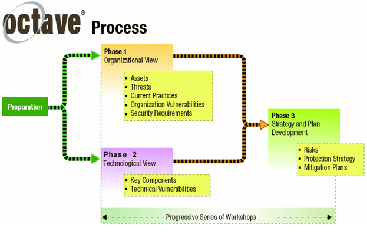
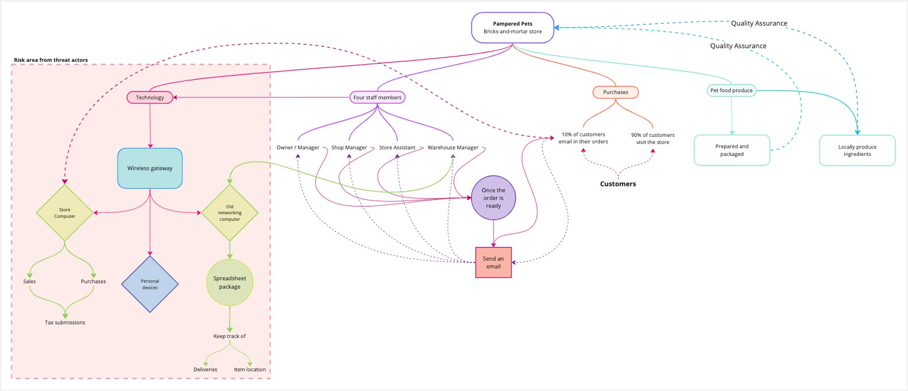
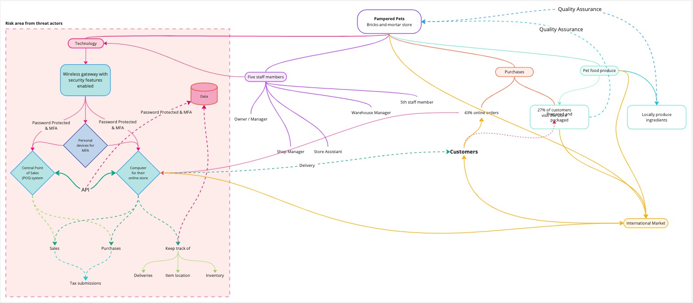
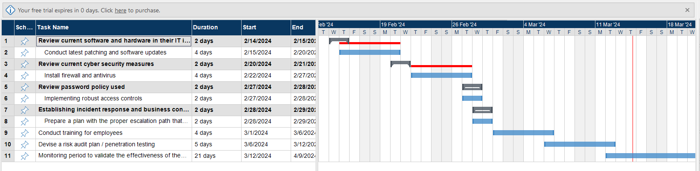

1. Introduction
This report explains the methodology and results of the risk assessment of the brick-and-mortar business Pampered Pets. Simultaneously, Pampered Pets is looking forward to expanding its business using digitalization, therefore the same assessment is being done for these plans. The first section of this document highlights the risk assessment of Pampered Pets in its current state. The second section concentrates on the risks associated with digitalization and the third section outlines the summary along with recommendations.
2. Risk Assessment
The chosen risk assessment methodology is the OCTAVE-S methodology, which is shown in Figure 1. It is argued that the OCTAVE-S approach is designed and applied to smaller businesses with a maximum of 100 people (Caralli et al., 2007; Shevchenko et al., 2018). Considering Pampered Pets consists of 4 employees, OCTAVE-S is a well-structured approach suited for identifying and prioritizing information security risks and providing recommendations on how to manage these risks.
Figure 1. Octave Process (Ionita, 2013).
2.1 Risk Assessment – Current State
Figure 2. Holds a diagram of Pampered Pets' current physical store. This also displays the usage of a wireless gateway to link their store computer and an old network computer, highlighting the risk area.
Figure 2: Diagram of Pampered Pets' current physical store (Miro | The Visual Workspace for Innovation, 2019).
Based on this information, the following results have been produced using the OCTAVE-S methodology:
Define Assets:
Inventory such as pet food and other accessories, customer data, financial records, and physical structure (shop, warehouse, etc).
Identify Threats:
Theft, damage to property, vandalism, and natural disasters (fire, flood) can potentially disrupt supply chain operations.
Identify Vulnerabilities:
A lack of security measures (surveillance) could make the business vulnerable to theft, vandalism, or poor information security practices.
Assess Impacts:
In this context, theft and information security have a higher impact on the business in the short term, so it would be beneficial to diversify the suppliers to reduce the impact of supply chain disruptions.
Risk Analysis and Prioritization:
In this case, theft and data security have higher priority as opposed to supply chain disruptions.
Develop Risk Mitigation Strategies:
Implementing physical security measures such as surveillance, alarms, and secure locks to protect assets. Furthermore, implementing information security procedures to secure client data, such as access controls, encryption, and frequent data backups. In addition, Training employees on proper safety protocols.
Implementation and Monitoring:
Adapt to changes in the business environment by reviewing and updating risk assessments regularly. It is advised to use the PDCA cycle for this process, as this is part of becoming ISO 27001/27002 compliant (Calder, 2011).
2.2 Risk Assessment – Digitalization
Figure 3. Holds a diagram of Pampered Pets' envisioned digitalization ambitions. This landscape highlights a central network that connects their POS with a secondary computer to manage their online sales, website, inventory, and international presence.
Figure 3: Diagram of Pampered Pets' digitalization ambitions (Miro | The Visual Workspace for Innovation, 2019).
Based on this information, the following results have been produced using the OCTAVE-S methodology:
Define Assets:
Identify critical assets that will be affected by the digitalization process, such as customer data (personal information and purchase history), inventory records, and financial information.
Identify Threats:
- Adversaries gaining access to sensitive information such as POS or customer database.
- Theft or exposure of customer data due to vulnerabilities in computer systems. For instance, Harry’s old computer system could be affected by such vulnerabilities due to its outdated software.
- Viruses, ransomware, or other malicious software compromising Pampered Pets business.
- Downtime or outages affecting digital services due to technical issues or DoS cyberattacks.
- Phishing scams or other forms of targeting employees to gain access to sensitive information.
Identify Vulnerabilities:
- Weak password policies: Employees using weak passwords or re-using passwords across multiple accounts.
- Outdated software: Failure to install security patches or updates, leaving systems vulnerable to known exploits. Next to that, the computer used by Harry and all computers and software that are at End-of-Support should be replaced by supported alternatives.
- Insufficient awareness of cybersecurity best practices of employees.
Assess Impacts:
In this case, DoS attacks can impact customer experience and damage a company’s reputation, while others have a direct impact on customer information.
Risk Analysis and Prioritization:
Analyze the probability and potential impact of each identified threat to determine its overall risk level based on its severity and likelihood of occurrence. For instance, training should be prioritized in addition to updating old hardware and software.
Develop Risk Mitigation Strategies:
- Limiting access to sensitive information and systems to authorized personnel only.
- Installing firewalls like WAF, antivirus software, and intrusion detection systems to detect and prevent threats.
- Conducting regular audits on Pampered Pets’ infrastructure on an ongoing basis. However, this needs to be executed by domain experts to ensure effective security of the network (Li et al., 2023).
- Educating staff about cybersecurity risks and best practices to minimize the likelihood of human error.
- Conducting the latest patching and upgrades to all computers and POS at Pampered Pets to ensure the latest fixes are in place. It would be difficult for hackers to inject malware into a fully patched computer system (Grimes, 2017).
- Preparing for security incidents by having a well-documented plan with an escalation path that is clear to all employees.
Implementation and Monitoring:
Implement the identified risk mitigation strategies and controls within Pampered Pets’ digital environment. Regularly monitor the effectiveness of these controls and adjust as necessary based on changes in the threat landscape or business requirements. Moreover, conduct periodic reviews and updates of risk assessment to ensure it remains relevant and aligned with Pampered Pets’ digitalization efforts.
Figure 4: Gantt chart (Matchware Mindview, 2019).
3. Conclusion and Recommendations
This thorough risk assessment of Pampered Pets shows that there are both opportunities and challenges associated with the digitalization process. Although there is no predefined integration of risk assessment methodologies. In future research FAIR (Factor Analysis of Information Risk) can be used alongside OCTAVE-S. While they can be used independently, it is also possible to use certain elements from each methodology to complement the other in a comprehensive risk assessment.
The current online purchasing method, coupled with physical in-store payment and pickup, poses security risks to customers. The warehouse manager's outdated computer system, lacking security patches, and lack of updates can lead to security breaches and prolonged downtime. The wireless gateway used also poses a security risk (Giansanti, 2021; Cybersecurity for Electronic Devices | CISA, 2021).
The organization should upgrade its traditional computer system to a modern supported POS system for enhanced sales transactions, inventory monitoring, and seamless integration with its online store. This may require additional computers and personnel. Access should be password-protected (Nguyen, 2021; POS Integration: How to Connect Offline and Online Sales, 2024).
Tighe (2023) highlights that 43% of US online shoppers shop online, presenting opportunities for online retail companies to boost sales, increase brand recognition, and expand their global customer base, potentially leading to cost savings.
Based on the findings of the risk assessment, we recommend that Pampered Pets to go ahead with the digitalization process, albeit with caution and careful consideration of the information security and plan shared. It is advised to follow the plan presented in the Gantt chart of Figure 4.
Authors:
- Anja Kosar: anja-kosar.github.io
- Amrol Miah
- Mohammed Younes: my23007.github.io
- Wiley Finch: wileyeducational.github.io/eportfolio
Editors: Anja Kosar & Wiley Finch